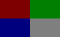

To get a flawless picture while browsing the Web with Links,
you have to perform the described procedure step-by-step. A test pattern
for the adjustment follows:
| 1. | Set "Setup -> Video options -> User gamma" to 1.0 |
| 2. | Switch off "Setup -> Video options -> Aspect correction on". |
| 3. | Set "View -> Html options -> Scale all images by (%)" to 100. |
| 4. | Turn "Contrast " to it's minimum. |
| 5. | Set " Brightness " to the highest level where black just still stays black. The gradient (where light output is proportional to horizontal offset) in the lower part of the image may assist you to perform this task or you may diminish horizontal size of the picture on your monitor's controls and check at the edge of the screen. |
| 6. | Set "Contrast " as you like it. |
| 7. | Adjust "Setup -> Video options -> Red, Green, Blue display gamma" until the inside of the test pattern looks like this:  Red gamma influences the red field, green gamma green field, blue gamma blue field. When right part of particularly coloured field is too dark, increase the appropriate gamma. When the right part is too light, decrease the gamma. The white field is there for confidence only. You shall not see the fringes in left parts of the fields. If you see them, go farther from the screen or take off glasses. |
| 8. | Set "Setup -> Video options -> User gamma" according to recommended setting that are provided in the dialog box. |
| 9. | Switch on "Setup -> Video options -> Aspect correction on". |
| 10. | Adjust you picture's size so that it just fits on the screen |
| 11. | Adjust "Setup -> Video options -> Aspect ratio" so that the white circle is perfectly circular. |
| 12. | If you are using a picture tube monitor, set "Setup -> Video options -> Display optimization for CRT". If you have got a flat panel LCD monitor, choose between "Setup -> Video options -> Display optimization for LCD (RGB)" and "Setup -> Video options -> Display optimization for LCD (BGR)" , whichever looks better. |
| 13. | Save your settings with "Setup -> Save options". |
| 14. | Do not touch "Brightness " any more. You may adjust "Contrast " whenever you want. |
If you have got an X Server that supports built-in software gamma correction, switch this gamma correction completely off. You will get a better picture. To switch the gamma correction off, edit the configuration file and set all "gamma" values to 1.0. After doing that, restart X Server, run Links and calibrate Links and the monitor.